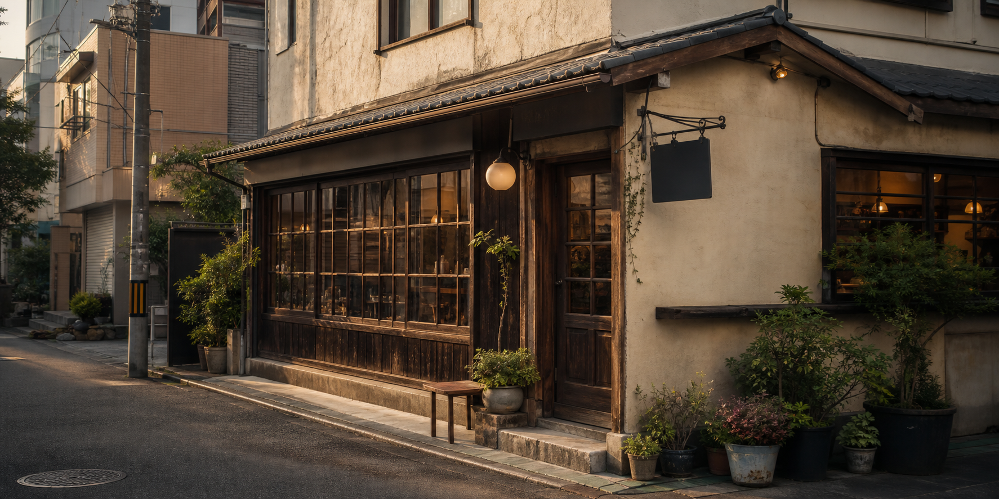
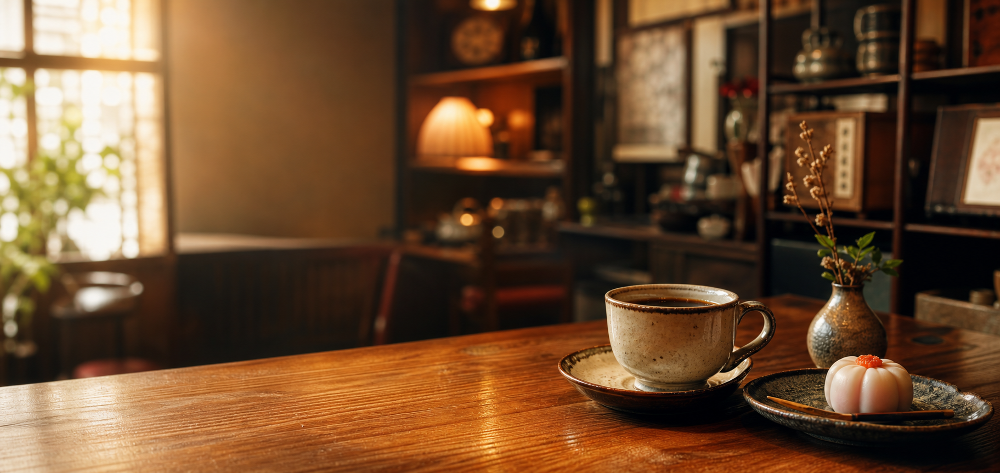

09:00 — 11:00
朝の一杯
トーストの香りとともに、ゆっくり始まる朝を。

KOMOREBI / EST. 1987
OPEN 9:00 — 19:00
CLOSED WEDNESDAY
本日のご案内 ただいま通常どおり営業しています。お席のご予約はお電話で承ります。
電話をかける朝の待ち合わせ、仕事の合間、夕暮れどきの寄り道。こもれびは、ふらりと入っても心地よく過ごせる、街の居間のような場所を目指しています。
深煎りのブレンド、昔ながらのナポリタン、季節の甘味。気取らない味と、ゆっくり流れる時間をご用意してお待ちしています。

02 The rhythm of a day
09:00 — 11:00
トーストの香りとともに、ゆっくり始まる朝を。
11:00 — 15:00
食後の珈琲まで、肩の力を抜いてひと休み。
15:00 — 19:00
窓際の席で、今日の続きを少しだけ。
04 For visitors
おひとりでも、どうぞ気兼ねなく。読書や小休憩でのご利用も歓迎です。
店内は全席禁煙です。入口脇に小さな喫煙スペースがございます。
混雑時は90分を目安に、お席をゆずり合ってご利用ください。
05 Access